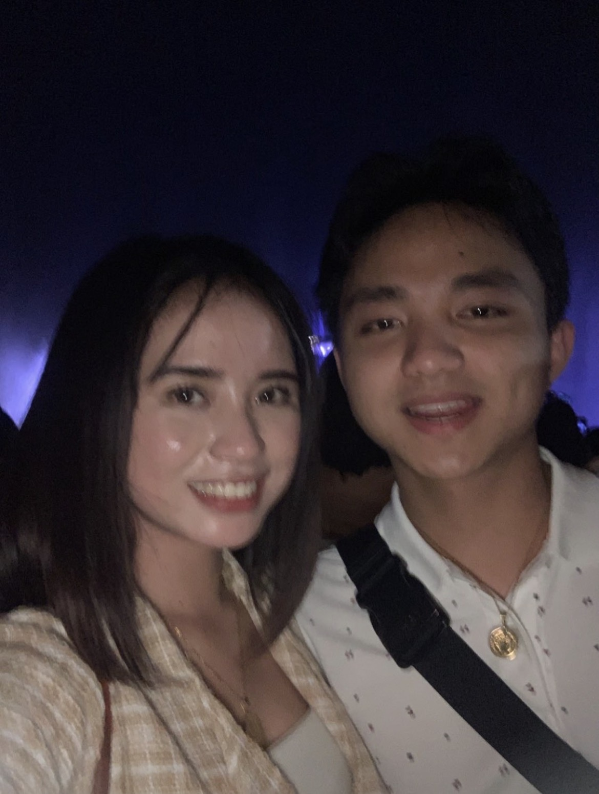
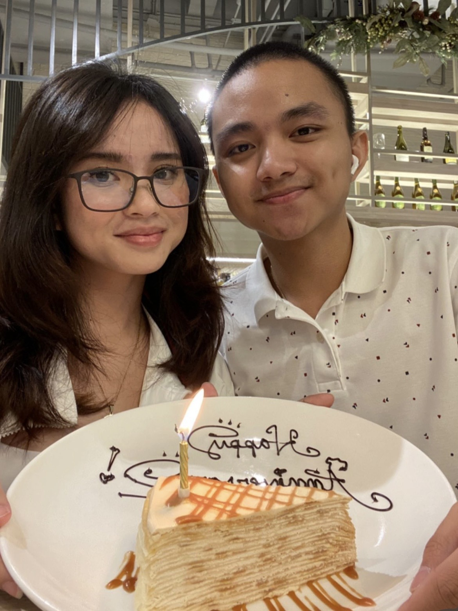
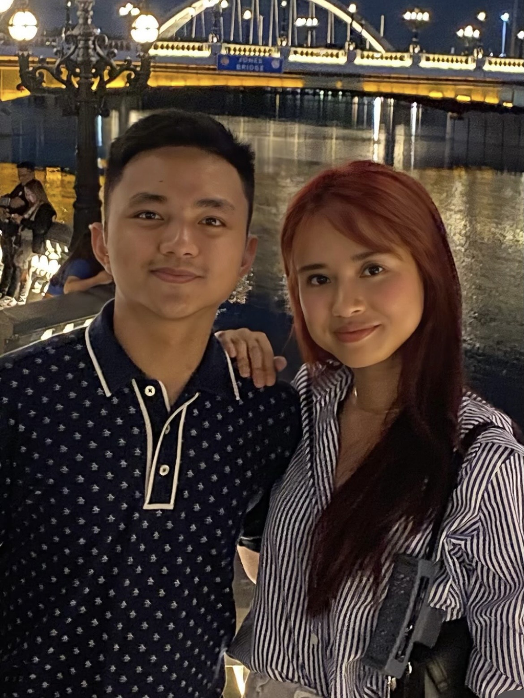

Our Memories
Six little pieces of us.
our first vc… kinda crazy how far we’ve come.
and this pic from our first meet? still my fav.

the day i said yes to being your girlfriend… and somehow that led to our first monthsary.

our first anniversary… and now look at us, 3 years later.

more travels, more dates, more memories with you.

and you’re still my favorite person to do life with.